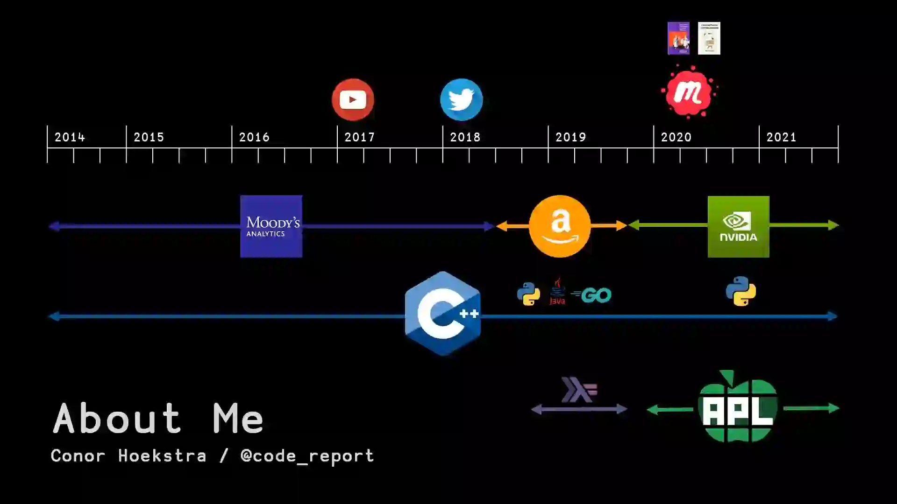
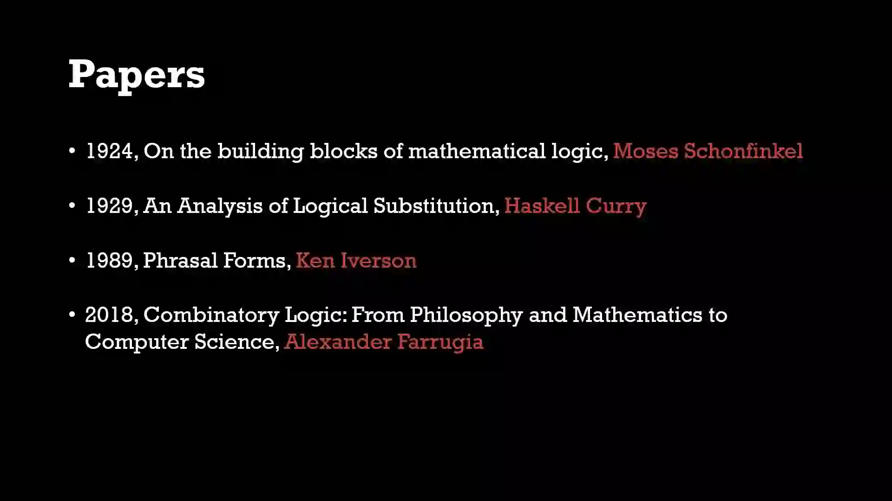
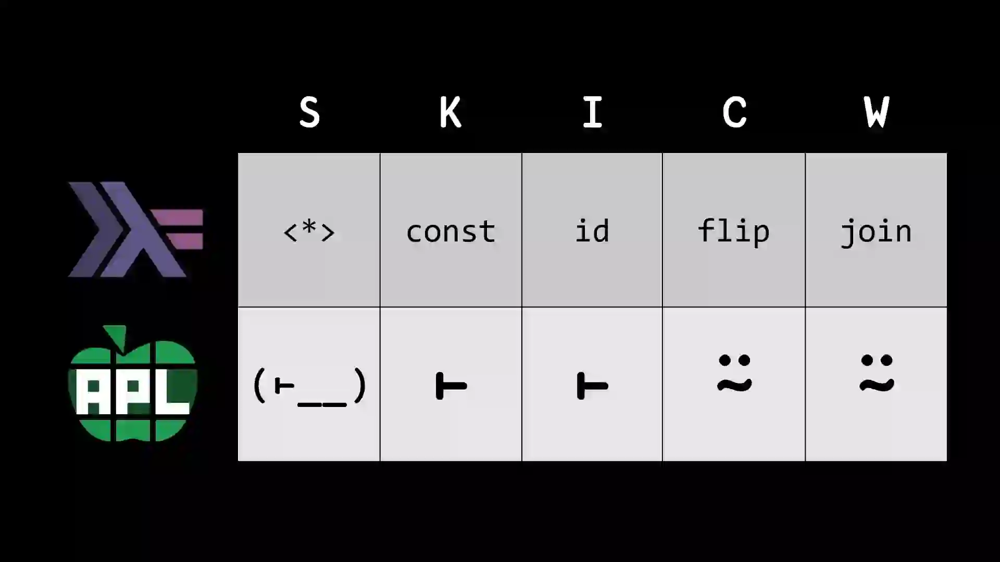
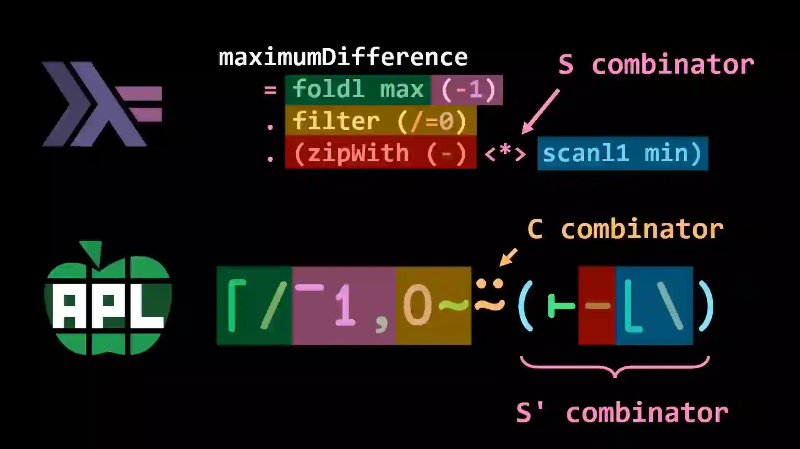
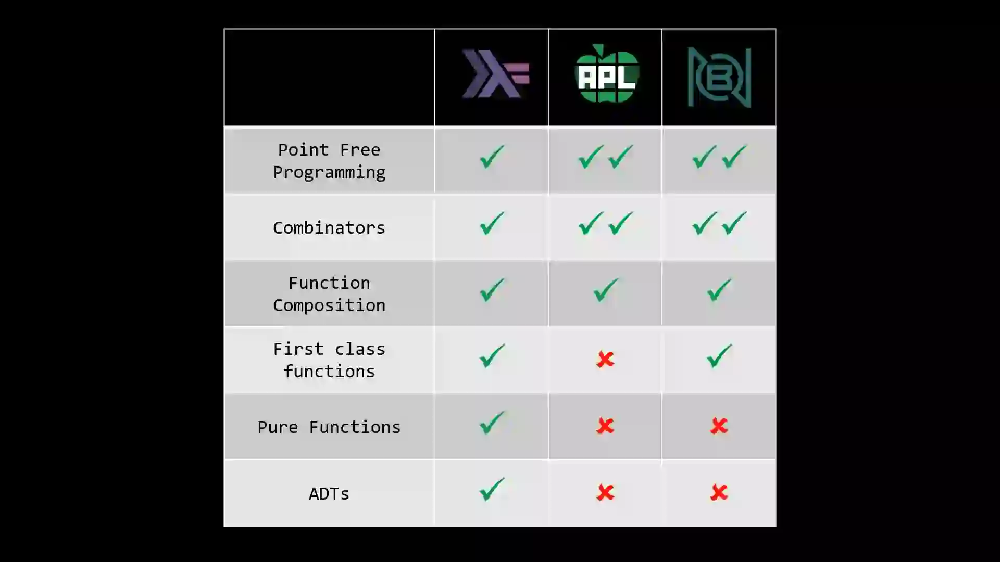

the work experience of code_report admin

combinatory logic foundation,
do you see
Haskell Curry?

combinator name comparison
Haskell vs APL

maximum-difference-between-increasing-elements problem in leetcode,
Haskell vs APL

features comparison,
Haskell vs APL vs BQN
#summary
#programming
#theory
#lang en